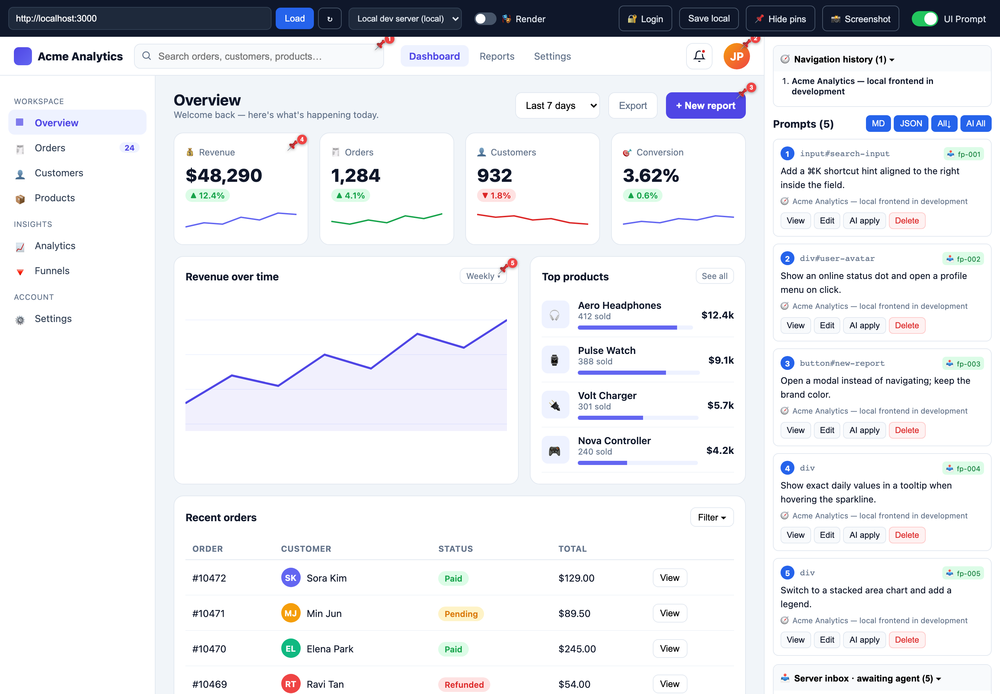
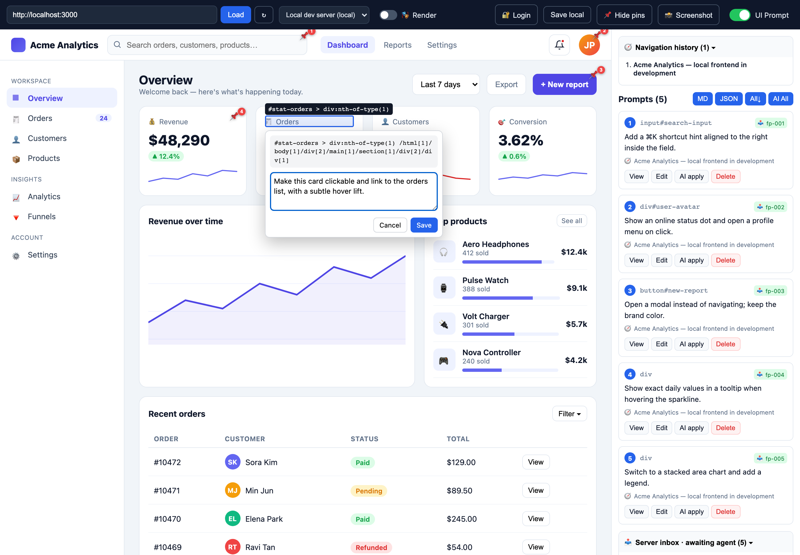
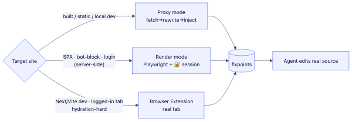
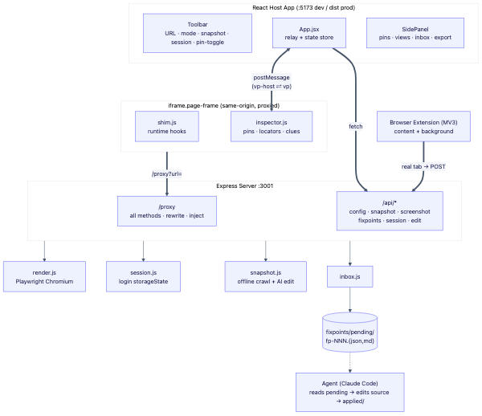

The moment you describe an element in words, the conversation falls apart.
Here's the fix ↓Drop a pin on any element, write one line, and a code agent edits exactly that spot in the real source — no describing required.

VisualPrompt turns "pointing at something on screen" into a precise, machine-readable edit instruction.
Toggle UI Prompt mode, click any element, and write the change in a popover. Each pin automatically
captures the element's selector, xpath, bounding box, framework, data-testid,
component name, and recent API calls — everything an agent needs to find and edit the real source.
It wraps any site three ways so the inspector can run on it: a rewriting proxy for built/static sites
and local dev servers, a headless Playwright render for SPAs, login, and bot-blocked sites, and an MV3
browser extension that runs in your real tab for the hard cases (Next/Vite dev, logged-in screens). Collected
pins are written as structured fixpoint files into a server inbox, where a code agent reads them, locates the
source by search clues, edits it, and moves it to applied/.
Every pin auto-captures selector · xpath · rect · text · framework · data-testid · component · API calls.

selector / xpath; you just type the change you want.Whatever the site throws at you — a proxy for the easy cases, a headless browser for the hard ones, and a browser extension for everything else.
Server fetches → rewrites every URL → injects the inspector → re-serves same-origin. Instant and interactive.
built & static sites · local devHeadless Chromium (Playwright) renders the finished DOM, then crawls / screenshots it. Login sessions injectable.
SPA · bot-blocked · server-sideRuns in your real tab, so the app hydrates natively. Handles what a proxy can't.
Next/Vite dev · logged-in · hard sites
client/ · iframe · toolbar · side panel · two-way postMessageserver/proxy.js · index.js · strip X-Frame/CSP · rewrite HTML/CSS/JS URLs · all HTTP methods · cookies · Rangeshim.js · inspector.js · hook fetch/XHR/setAttribute · pins · DOM locators · source cluesinbox.js → fixpoints/pending/fp-NNN.{json,md} · agent reads, edits source, moves to applied/
Each pin is written as one structured file. The agent finds the source by search terms (no fragile selectors), edits it, and moves the file to applied/.
text/css modules & Unexpected token '<'